Chapitre 1 : Les fonctions de références {\large La fonction du second degré}
Première spécialité · Chapitre 1 — Fonction du second degré · cours de Frederik de Peyrelongue
I. La fonction carré
La fonction carré est la fonction définie sur $\R$ par
Sa représentation graphique dans un repère orthogonal est une parabole ayant l'axe des ordonnées pour axe de symétrie et ayant pour sommet l'origine du repère.
Preuve : voir activité 1.
Une fonction $f$ définie sur $\R$ est paire si, pour tout $x$ réel,
Une fonction définie sur $\R$ est impaire si, pour tout $x$ réel,
Une fonction paire est symétrique par rapport à l'axe des ordonnées.
Une fonction impaire est symétrique par rapport à l'origine du repère.
Démontrer cette propriété !
La fonction carré est paire : en effet, pour tout $x$,
Conséquence : elle admet pour axe de symétrie l'axe $(Oy)$.
On dresse un tableau de valeurs pour tracer $\mathcal{C}_{f}$ :
| $x$ | $0$ | $\dfrac{1}{2}$ | $1$ | $2$ | $3$ | $5$ |
| $f(x)$ | $0$ | $\dfrac{1}{4}$ | $1$ | $4$ | $9$ | $25$ |
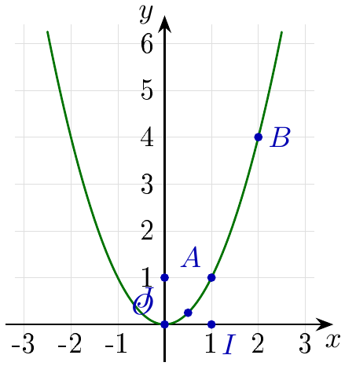
La fonction carré $f$ est strictement décroissante sur $\left]-\infty\,;0\right]$ et strictement croissante sur $\left[0\,;+\infty\right[$. Son minimum sur $\R$ est $0$, et il est atteint pour $x=0$.
Démontrer que $f$ est croissante sur $\left[0\,;+\infty\right[$.
Soient $a\in\R^{+}$ et $b\in\R^{+}$ tels que $a<b$.
On va comparer les images $f(a)$ et $f(b)$ : on calcule $f(a)-f(b)$ et on étudie le signe.
$a\geqslant 0$ et $b\geqslant 0$, d'où $a+b\geqslant 0$.
$a<b\iff a-b<0$ : la règle des signes implique que le produit est négatif, $(a-b)(a+b)\leqslant 0$.
Donc $f(a)-f(b)\leqslant 0\iff f(a)\leqslant f(b)$ : c'est vrai pour tous les nombres $a$ et $b$ réels positifs.
Conclusion : $\forall a,b\in\R^{+}$, $a<b\Longrightarrow f(a)\leqslant f(b)$.
La fonction carré est donc croissante sur $\R^{+}$.
II. La fonction carré et ses variantes
2.1 Transformations géométriques appliquées à la fonction carré
Activité 2 : les transformations de la fonction carré.
II.2 a) Translation verticale
Soit $g(x)=f(x)+k$.
La translation de vecteur $k\vec{j}$ transforme la courbe $\mathcal{C}_{f}$ en la courbe $\mathcal{C}_{g}$.
En effet, soit $M\bigl(x\,;f(x)\bigr)\in\mathcal{C}_{f}$ et soit $M'(x'\,;y')$ l'image de $M$ par la translation de vecteur $k\vec{j}$ : on a alors
d'où
d'où $M'\in\mathcal{C}_{g}$.
Quel que soit $M\in\mathcal{C}_{f}$, alors $M'\in\mathcal{C}_{g}$.
Conclusion : la fonction définie sur $\R$ par $f(x)=x^{2}+k$ a pour représentation graphique la translation de vecteur $k\vec{j}$ de la parabole de la fonction carré.
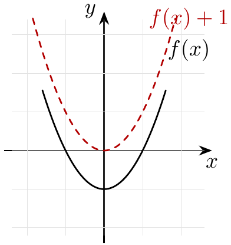
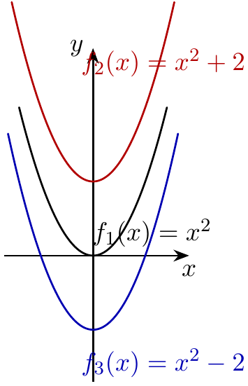
II.3 b) Translation horizontale
Soit $g(x)=f(x+k)$.
La translation de vecteur $-k\vec{i}$ transforme la courbe $\mathcal{C}_{f}$ en la courbe $\mathcal{C}_{g}$.
En effet, soit $M\bigl(x\,;f(x)\bigr)\in\mathcal{C}_{f}$ et soit $M'(x'\,;y')$ l'image de $M$ par la translation de vecteur $-k\vec{i}$ : on a alors
d'où
d'où $M'\in\mathcal{C}_{g}$.
Quel que soit $M\in\mathcal{C}_{f}$, alors $M'\in\mathcal{C}_{g}$.
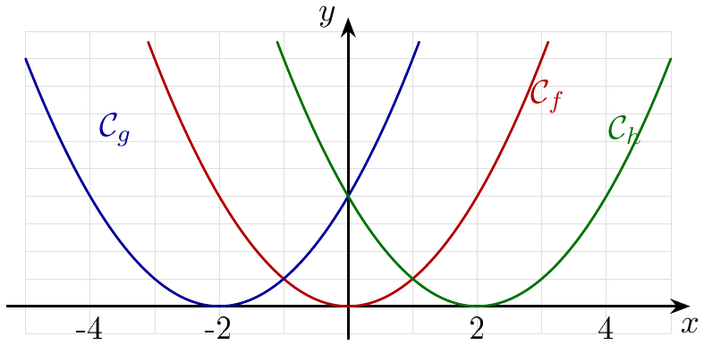
Conclusion : la fonction définie sur $\R$ par $f(x)=(x+k)^{2}$ a pour représentation graphique la translation de vecteur $-k\vec{i}$ de la parabole de la fonction carré.
II.4 c) Réflexion par rapport à l'axe des abscisses
Soit $g(x)=-f(x)$.
La symétrie par rapport à l'axe des abscisses transforme la courbe $\mathcal{C}_{f}$ en la courbe $\mathcal{C}_{g}$.
En effet, soit $M\bigl(x\,;f(x)\bigr)\in\mathcal{C}_{f}$ et soit $M'(x'\,;y')$ l'image de $M$ par la symétrie axiale $(Ox)$ : on a alors
Quel que soit $M\in\mathcal{C}_{f}$, alors $M'\in\mathcal{C}_{g}$.
Conclusion : la fonction définie sur $\R$ par $f(x)=-x^{2}$ a pour représentation graphique la parabole de la fonction carré inversée.
II.5 d) Étirement ou compression verticale
Soit $f(x)=ax^{2}$.
- si $|a|>1$, on étire verticalement la parabole ;
- si $|a|<1$, on compresse verticalement la parabole.
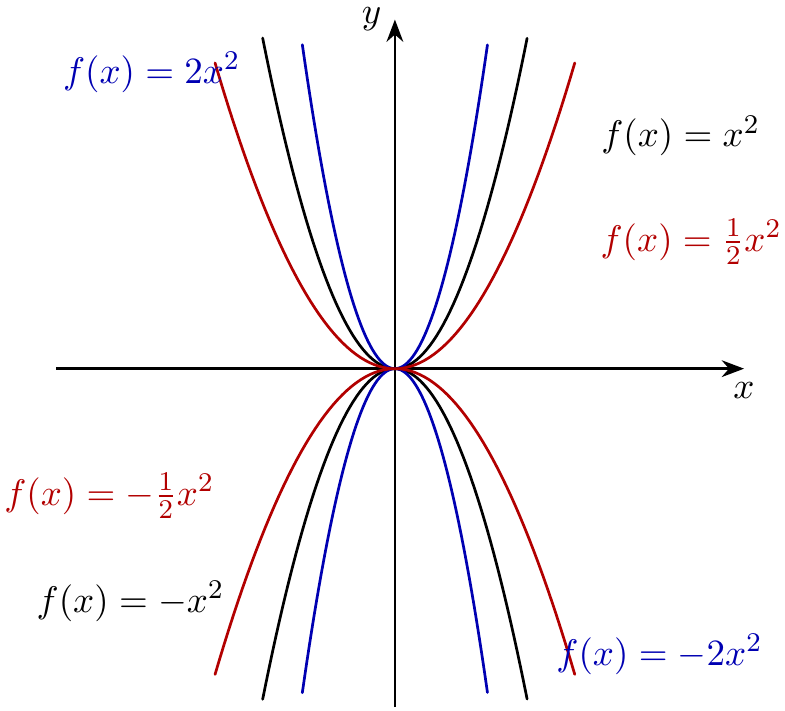
III. La fonction polynôme du second degré
Une fonction polynôme du second degré est une fonction définie sur $\R$ dont une expression est de la forme
où $a$, $b$ et $c$ sont des réels tels que $a\neq 0$. Sa courbe représentative $\mathcal{P}$ est une parabole.
3.1 La forme canonique
Activité 3 : « Vers la forme canonique »
Toute fonction polynôme du second degré admet une expression dite forme canonique. Il existe deux réels $\alpha$ et $\beta$ tels que, pour tout réel $x$,
La courbe $\mathcal{C}_{f}$ est donc une parabole ayant pour sommet $S(\alpha\,;\beta)$ et pour axe de symétrie la droite d'équation $x=\alpha$.
Rappel : $(u+v)^{2}=u^{2}+2uv+v^{2}$, donc $u^{2}+2uv=(u+v)^{2}-v^{2}$.
Preuve :
En posant
on a le résultat souhaité.
Pour tracer la courbe de $\mathcal{C}_{f}$, on peut appliquer les transformations vues précédemment : avec le coefficient $a$, selon le signe, on inverse ou non la parabole ; si $|a|>1$, on resserre la parabole sur l'axe des ordonnées, puis on applique une translation horizontale de vecteur $\alpha\vec{i}$, puis une translation verticale de vecteur $\beta\vec{j}$.
On constate donc que l'axe de symétrie de la fonction carré est translaté du vecteur $\alpha\vec{i}$ : la parabole a donc pour axe de symétrie l'équation $x=\alpha$.
Le sommet de la fonction carré $O(0\,;0)$ est transformé par les deux translations successives de vecteur $\alpha\vec{i}$ puis $\beta\vec{j}$ en point $S(\alpha\,;\beta)$.
La parabole $\mathcal{P}$ d'une fonction $f(x)=ax^{2}+bx+c$ admet :
- le point $S(\alpha\,;\beta)$ comme sommet ;
- la droite d'équation $x=\alpha$ comme axe de symétrie.
Application : tracer la courbe de la fonction $f(x)=5x^{2}-4x+3$.
Application : voici la représentation graphique d'une fonction polynôme du second degré $f$ définie sur $\R$. Sans résoudre de système, déterminer une expression de $f$.
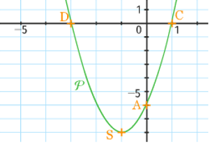
On connaît les points $S(-1\,;-8)$ et $A(0\,;-6)$ : on utilise la forme canonique.
Donc $\alpha=-1$ et $\beta=-8$.
$f$ a pour expression $f(x)=a(x+1)^{2}-8$.
On utilise $f(0)=-6$ pour déterminer $a=2$.
3.2 Existence de racine de la fonction polynôme du second degré
Soit $f$ un polynôme : un nombre réel $u$ est une racine de $f$ si
La fonction polynôme admet des racines si la parabole traverse l'axe des abscisses.
Activité 4 : identifier le signe de $a$ et de $\beta$ sur chacune des paraboles suivantes.
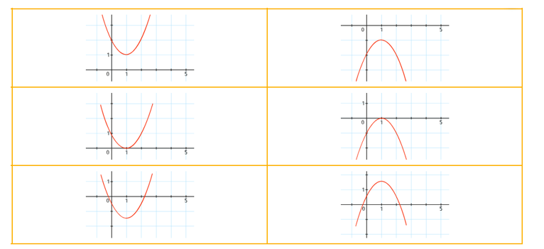
Indiquer dans le tableau suivant le nombre de racines et le signe de $a\beta$.
| $a>0$ | $a<0$ | |
| $\beta<0$ | $2$ racines et $a\beta<0$ | Pas de racine et $a\beta>0$ |
| $\beta=0$ | $1$ racine et $a\beta=0$ | $1$ racine et $a\beta=0$ |
| $\beta>0$ | Pas de racine et $a\beta>0$ | $2$ racines et $a\beta<0$ |
On appelle discriminant $\Delta$ du polynôme du second degré le nombre
Montrer que $\Delta=-4a\beta$.
Conclusion : on a un algorithme simple pour déterminer l'existence de racines.
Soit $\Delta$ le discriminant de la fonction polynôme du second degré $f(x)=ax^{2}+bx+c$.
- Si $\Delta<0$, alors la fonction $f$ n'a pas de racine.
- Si $\Delta=0$, alors la fonction $f$ a une solution réelle.
- Si $\Delta>0$, alors l'équation a deux solutions réelles distinctes.
Le discriminant est positif : $f$ admet deux racines.
Sous Python, écrire une fonction qui détermine le nombre de racines d'une fonction polynôme du second degré.
3.3 Calcul des racines de la fonction polynôme du second degré
Soit $f$ une fonction polynôme du second degré $f(x)=ax^{2}+bx+c=a(x-\alpha)^{2}+\beta$, avec
Donc
1er cas : $\Delta<0$.
$-4\Delta>0$, donc $(x-\alpha)^{2}-4\Delta>0$. Conclusion : $f$ n'a pas de racine.
2ème cas : $\Delta=0$.
On a donc
Donc
$f$ admet une unique racine $x_{0}=\alpha=-\dfrac{b}{2a}$, dite double, et on peut factoriser $f$ sous la forme
3ème cas : $\Delta>0$.
$\dfrac{\Delta}{4a^{2}}$ est donc un carré : c'est le carré de $\dfrac{\sqrt{\Delta}}{2a}$ ; l'expression $(x-\alpha)^{2}-\dfrac{\Delta}{4a^{2}}$ est donc une différence de $2$ carrés. Je peux la factoriser :
Résoudre
$f$ admet deux racines
et on peut factoriser $f$ sous la forme
On considère une fonction du second degré $f(x)=ax^{2}+bx+c$.
- Si $\Delta<0$ : le trinôme n'a pas de racine réelle. Il n'est pas factorisable dans $\R$.
Si $\Delta=0$ : le trinôme a une racine double $x_{0}=\alpha=-\dfrac{b}{2a}$.
Pour tout réel $x$, $f(x)=a\left(x+\dfrac{b}{2a}\right)^{2}$.
Si $\Delta>0$ : le trinôme a deux racines réelles distinctes
\[ x_{1}=\frac{-b+\sqrt{\Delta}}{2a} \qquad\text{et}\qquad x_{2}=\frac{-b-\sqrt{\Delta}}{2a} . \]Pour tout réel $x$, $f(x)=a(x-x_{1})(x-x_{2})$.
La fonction $f$ n'a pas de racine et n'est pas factorisable.
Sous Python, écrire une fonction qui détermine le nombre de racines et les valeurs des racines lorsqu'elles existent, d'une fonction polynôme du second degré.
3.4 Signe de la fonction polynôme du second degré
Si $\Delta\geqslant 0$, on peut factoriser sous la forme
On peut alors dresser un tableau de signes :
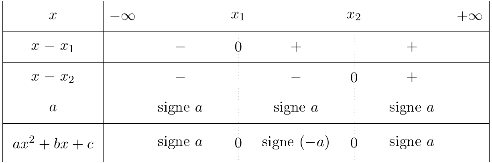
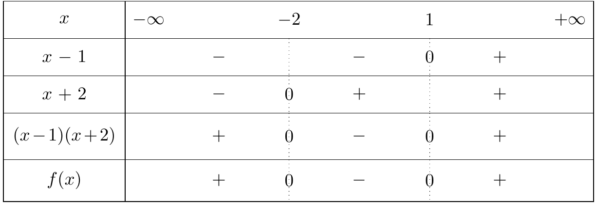
Si $\Delta<0$, la fonction reste de signe constant : elle garde le signe de $a$.
La fonction $f$ garde le signe de $a=-2$ : elle est strictement négative.
3.5 Sens de variation de la fonction polynôme du second degré
Pour étudier les variations d'une fonction polynôme du second degré, on utilise la forme canonique
Soit $f(x)=ax^{2}+bx+c=a(x-\alpha)^{2}+\beta$.
- Si $a>0$, alors $f$ est décroissante sur $\left]-\infty\,;\alpha\right]$ et croissante sur $\left[\alpha\,;+\infty\right[$.
- Si $a<0$, alors $f$ est croissante sur $\left]-\infty\,;\alpha\right]$ et décroissante sur $\left[\alpha\,;+\infty\right[$.
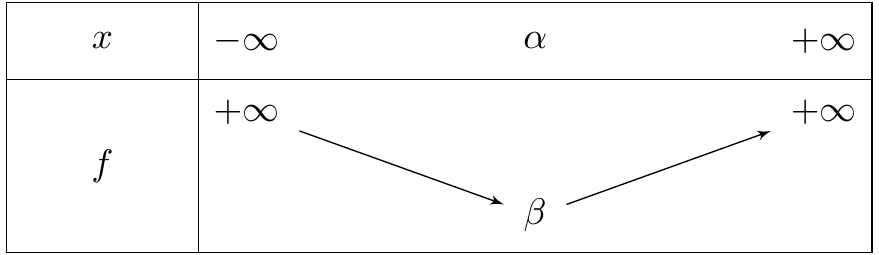
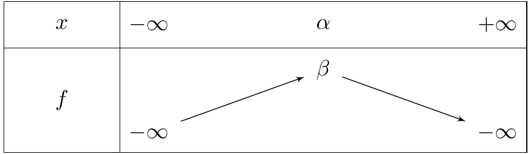
Preuve : soit $a<0$.
Sur l'intervalle $\left]-\infty\,;\alpha\right]$ : $u$ et $v$ sont deux réels tels que $u<v\leqslant\alpha$, donc $u-\alpha<v-\alpha\leqslant 0$.
Ainsi $(u-\alpha)^{2}>(v-\alpha)^{2}$, puisque la fonction carré est décroissante sur $\left]-\infty\,;0\right]$.
$a(u-\alpha)^{2}<a(v-\alpha)^{2}$, puisque $a<0$, donc $a(u-\alpha)^{2}+\beta<a(v-\alpha)^{2}+\beta$, soit $f(u)<f(v)$.
$f$ est donc croissante sur $\left]-\infty\,;\alpha\right]$.
Sur l'intervalle $\left[\alpha\,;+\infty\right[$ : $u$ et $v$ sont deux réels tels que $\alpha\leqslant u<v$, donc $0\leqslant u-\alpha<v-\alpha$.
Ainsi $(u-\alpha)^{2}<(v-\alpha)^{2}$, puisque la fonction carré est croissante sur $\left[0\,;+\infty\right[$.
$a(u-\alpha)^{2}>a(v-\alpha)^{2}$, puisque $a<0$, donc $a(u-\alpha)^{2}+\beta>a(v-\alpha)^{2}+\beta$, soit $f(u)>f(v)$.
$f$ est donc décroissante sur $\left[\alpha\,;+\infty\right[$.